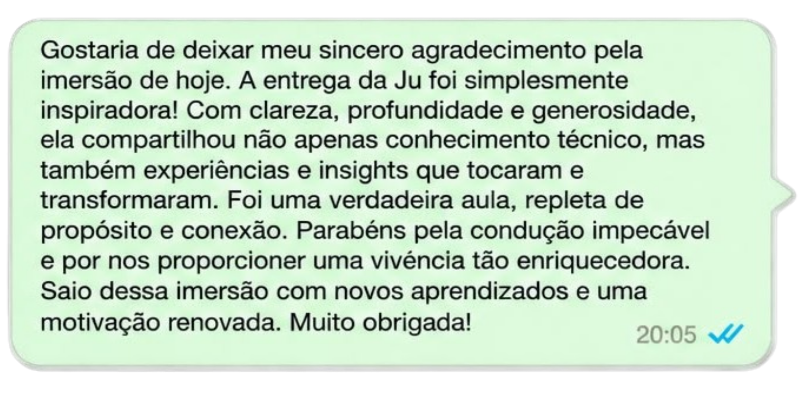
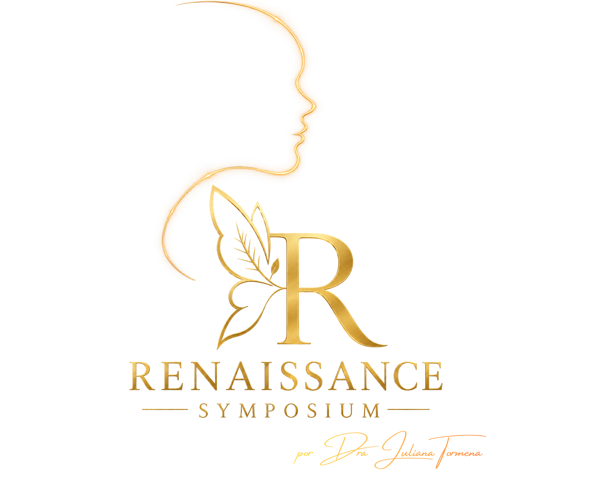
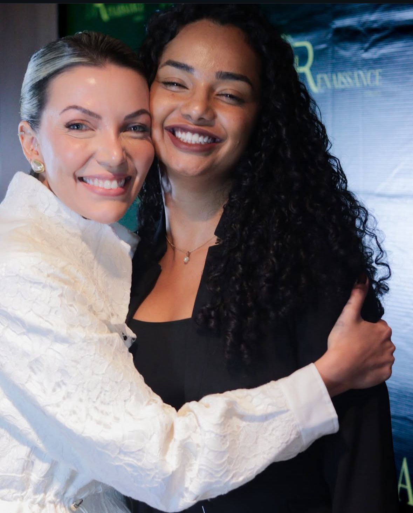
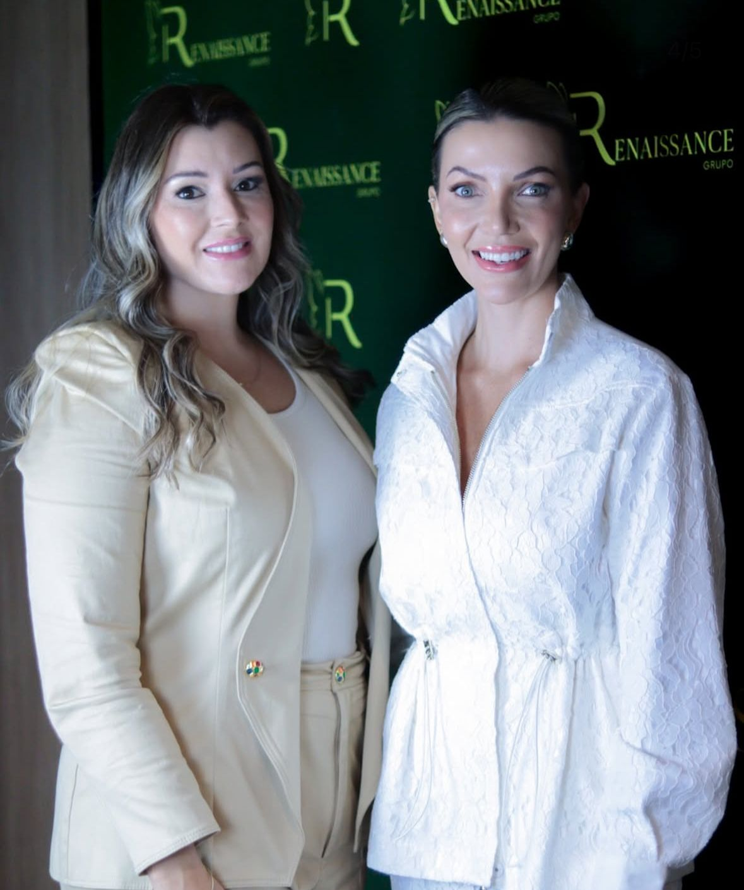
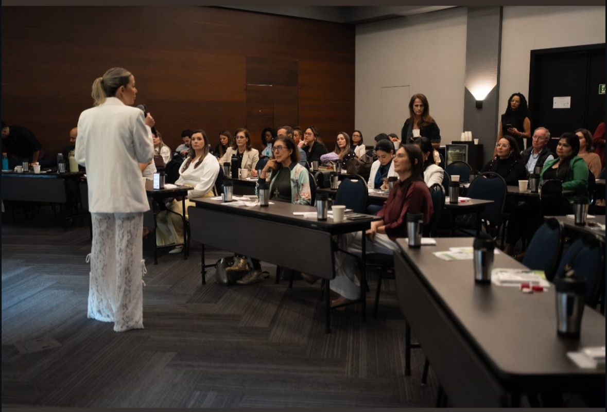
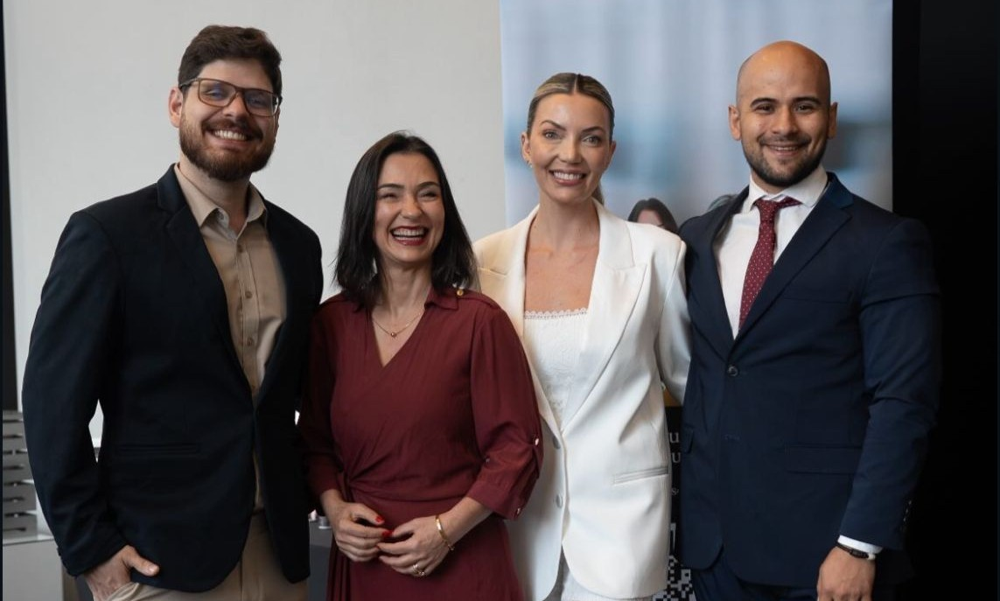
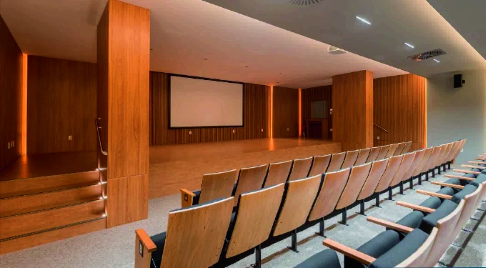

A imersão Renaissance reúne mulheres que decidiram elevar o nível da estética, da ciência, do posicionamento e da mentalidade. Com o propósito de transformar vidas através da estética, saúde e bem-estar.
Dois dias para descobrir novas possibilidades e vivenciar uma experiência criada para quem não quer apenas acompanhar o futuro — quer fazer parte dele.


Descubra como a saúde integrativa pode transformar seus resultados na estética facial. Palestras transformadoras, conteúdo de alto nível e momentos que fortalecem laços profissionais e humanos.

Reunimos profissionais, especialistas e apaixonados pelo futuro da saúde e da estética para compartilhar conhecimento, experiências e novas perspectivas.


DO TERRENO BIOLÓGICO AO HIGH TICKET - A nova era da estética regenerativa

Golden Full Face: Planejamento Estrutural para Harmonização e Rejuvenescimento Facial em Pacientes Classe II – Divisão 1

Estratégia Regenerativa Multimodal na Fibrose Persistente Pós-Endolaser

HOF Advanced and Surgery

Do Sinal à Causa — Acometimentos da pele e os pilares da abordagem integrativa

LONGEVITY — Lifting além do tempo

Lifting Facial Além da Estética — Aplicações na Reconstrução de Ferimentos Complexos da Face

Além do Full Face — Uma abordagem regenerativa do envelhecimento facial

Agregados Plaquetários — O diferencial Premium da sua clínica em 2026

Fios de PDO: Planejamento Estratégico para Resultados Naturais

Gestão de clínicas: Incremento de receita com protocolos e CRM

Os 4 pilares do sucesso

Fios de PDO Montados: A Tríade da Transformação — Preenchimento, Bioestimulação e Miomodulação


30 E 31 DE OUTUBRO DE 2026
Escolha o seu lote e faça parte dessa experiência.